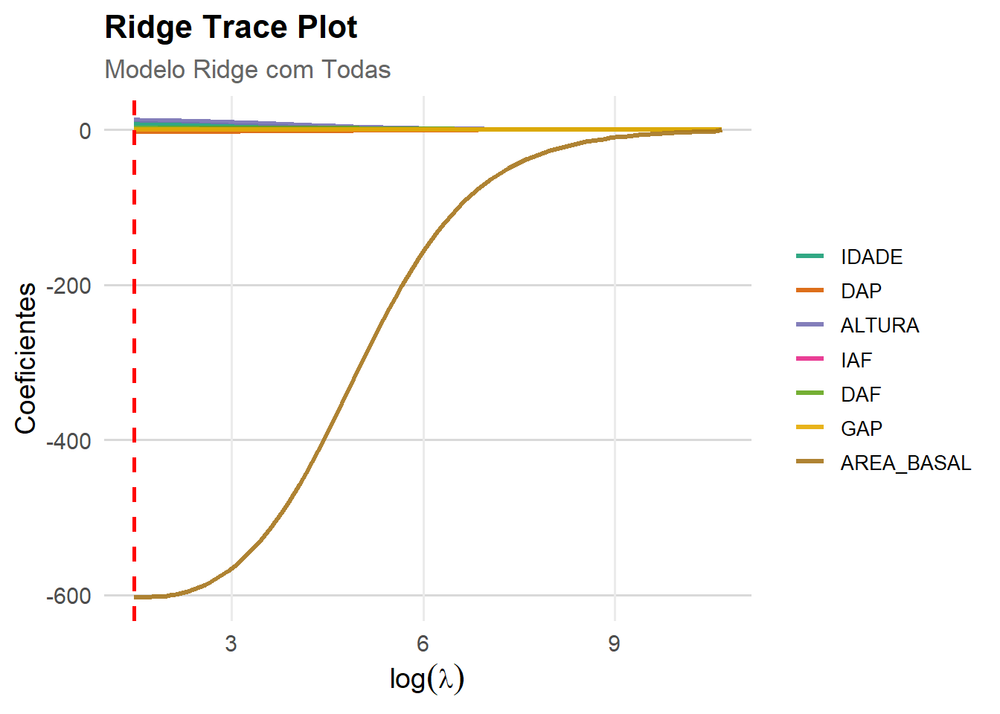

library(readxl)
dados <- read_excel("dados_pinus.xlsx")4 Modelo de Regressão Ridge
A regressão de Cume, Cumeeira, em Crista ou chamada Ridge Regression, proposta por Hoerl e Kennard (1970a), é um dos vários métodos propostos para remediar os problemas de multicolinearidade, alterando o método de mínimos quadrados para permitir estimadores viesados dos coeficientes de regressão.
Quando um estimador tem um viés pequeno e é substancialmente mais preciso que o estimador não viesado, este pode ser escolhido desde que tenha grande probabilidade de estar próximo do valor verdadeiro (Hoerl; Kennard 1970b). Assim a probabilidade do estimador de cumeeira estar próximo do valor verdadeiro é muito maior que para o estimador não viesado de mínimos quadrados ordinais (NETER et al., 1996).
Uma medida da combinação do efeito do viés e da variação amostral é o valor esperado do quadrado do desvio do estimador e do valor verdadeiro. Esta medida é chamada de Erro Médio Quadrático (EMQ), e pode ser escrita como,
\[ E(\hat{\beta}-\beta)^{2} = V(\hat{\beta}) + [E(\hat{\beta})-\beta]^{2}\]
Dessa maneira, o EMQ é igual à variância do estimador mais o viés ao quadrado. Note que se o estimador for não viesado, o erro médio quadrático é igual ao estimador da variância. Pelo método de mínimos quadrados, o coeficiente \(\beta\) pode ser estimado como,
\[ \hat{\beta} = (X^{'}X)^{-1}X^{'}Y \]
e as estimativas e suas variâncias poderão ser incertas na presença de multicolinearidade. A regressão de cume consiste na adição de coeficientes a diagonal principal da matriz de correlações \((X^{'}X)^{-1}\) , causando um decréscimo na variância das estimativas. Desta maneira, o estimador de cume de \(\beta\) é obtido por,
\[\hat{\beta} = (X^{'}X + k)^{-1}X^{'}Y\] Sendo \(k= diagonal(k_{1},k_{2},...,k_{p}), k_{i} \geq 0\), onde um procedimento bastante usado é \(k=kI\), \(k_{i} \geq 0\) . O estimador em cume é na verdade uma família de estimadores, onde \(k\) é um valor pequeno que deve ser escolhido a critério do pesquisador. Em geral, aumenta-se gradativamente o valor de \(k\) até que os estimadores dos coeficientes tornam-se estáveis, não variam. Se a escolha for \(k_{i} = 0\), para todo \(i\), tem-se o estimador de Mínimos Quadrados (NETER; WASSERMAN, 1974), (DRAPER; SMITH, 1981) e (ELIAN, 1998).
Quando os dados possuem traços de multicolinearidade sempre existe um valor para o parâmetro \(k\) no qual os estimadores de Regressão em Crista produzem um Quadrado Médio do Erro (QME) menor do que o QME produzido pelos Estimadores de mínimos quadrados ordinários (HOERL; KENNARD, 1970a), (NETER; WASSERMAN, 1974), (DRAPER; SMITH, 1981), (ELIAN, 1998),
A função estimada pela Regressão em Crista produz predições com novas observações que tendem a serem mais precisas do que as feitas pela função estimada pelo método de mínimos quadrados ordinários, quando as variáveis independentes são correlacionadas e a nova observação segue o mesmo padrão de multicolinearidade, esta precisão na predição de novas observações é favorecida pela Regressão de Cume, especialmente quando a multicolinearidade é forte (NETER; WASSERMAN, 1974), (DRAPER; SMITH, 1981), (ELIAN, 1998).
4.1 Métodos pra Determinar \(k\)
Um valor ideal para o parâmetro \(K\), o qual resulta em um menor QME que o obtido pelo Método de Mínimos Quadrados Ordinários (MQO) depende do vetor de parâmetro desconhecido e da variância do erro também desconhecido (HOERL; KENNARD, 1970a). Conseqüentemente, K precisa ser determinado empiricamente ou obtido dos dados, e não é possível determinar o valor ideal do parâmetro de cume K. Muitos métodos têm sido propostos para obter os valores apropriados, mas não existe um consenso de qual método é o mais adequado. Assim, o parâmetro de ridge \(K\) será estimado a partir de dois métodos: Gráfico do Traço de Cume (Ridge Trace Plot) e Gráfico do Fator de Inflação da Variância (Variance Inflation Factor Plot).
Um dos obstáculos principais em utilizar a regressão de cume está em escolher um valor de k. O traço de cume é um esboço dos valores de (p-1) coeficientes estimados de regressão de cume padronizados para diferentes valores de \(K\), usualmente entre 0 e 1. Feito o traço, pode-se examinar um valor de \(K\) onde as estimativas se estabilizam. Hoerl e Kennard (1970b) desenvolveram um gráfico bidimensional do valor de cada coeficiente versus \(k\), mostrando como os valores de \(\hat{\beta}\) variam em função dos valores de k, ou seja, a partir do gráfico o analista escolhe um valor para K que os coeficientes da regressão tendem a ser mais precisos, que o MQO, quando os dados estão sob o efeito da multicolinearidade.
Segundo Chagas et al. (2009), o objetivo é escolher um valor de k a partir do qual as estimativas dos parâmetros sejam relativamente estáveis gerando uma série de coeficientes com menor soma dos quadrados do resíduo do que a solução clássica. Assim, na medida em que se aumenta o valor de k, a soma de quadrados dos resíduos também aumentará, sugerindo iniciar com valores pequenos de k e ir aumentando gradativamente até que os coeficientes se estabilizem.
Para Hoerl e Kennard (1970a), o Fator de Inflação da Variância, mostra a variabilidade em função do valor de K, ou seja, à medida que se atribui valores para K que estabilizam os coeficientes de regressão de cume, a variabilidade diminui, removendo a multicolinearidade. O traço do cume pode também ser usado para sugerir variável(s) que pode(m) ser retiradas do modelo. Algumas variáveis cuja estimativa do parâmetro é instável a cada mudança do valor de K ou que decresce para zero são candidatos para anulação.
Atualmente na literatura, existem várias medidas corretivas para suavizar os efeitos provocados pela multicolinearidade, outros métodos são propostos desde simples as mais complexas, tais como, Ampliação do Tamanho da Amostra e Remoção das Variáveis (HAIR et al., 2005), utilização de Modelo de Regressão por Componente Principais (SILVA et al., 2009), Modelo de Regressão por Análise Fatorial (VALENTE et al., 2011), Regressão com Variáveis Latentes (MALHOTRA, 2011) e Regressão via Redes Neurais (RODRIGUES et al., 2010) e (LEAL et al., 2015).
Para rodar a regressão Ridge na linguagem R, usaremos o pacote glmnet.
4.2 Carregar Dataset2
Segundo Passo é carregar a base de dados, chamada de Volume de Pinus. Para isso é necessário instalar o pacote para leitura de arquivo com extensão do tipo excel(.xlsx) por meio do comando install.packages(“readxl”).
Posteriormente, ativar o pacote no R com o comando library(readxl). Tendo um detalhe fundamental, que se instala somente um vez o pacote, e se ativa toda vez que for usar.
4.2.1 Variáveis
Para ilustrar a regressão ridge, vamos começar com um exemplo em que queremos estudar a relação entre DAP (variável preditora \(X_{1}\)) e Volume (variável dependente Y) com uma amostra de 250 arvores.
- Local: Empresa Duratex Florestal SP
- Amostra: 20 arvores
- IAF : Indice Aerea Foliar
- DAF : Distribuição Angular da Folha
- GAP :
- IDADE : Idade em Meses da arvore
- DAP : Diâmetro a Altura do Peito (1.30 metros do solo)
- ALTURA : Altura da arvore
- ÁEREA BASAL : Area Basal da arvore
4.3 Matriz de Correlação
library(corrplot)
correl <- cor(dados[, -1])
corrplot(correl,
method = "color", # circle, number, shade
type = "upper", # lower, full
#order = "hclust",
addCoef.col = "black",
tl.srt = 90,
diag = TRUE)4.4 Matriz de Dispersão
library(psych)
library(GGally)
pairs.panels(dados,
method = "pearson",
density = TRUE,
ellipses = TRUE,
smoother = TRUE)4.5 Regressão Linear
Uma das tarefas mais corriqueiras dos analista de dados é a produção de tabelas. Seja para apresentar frequências, estatísticas descritivas (media, mediana, moda, etc), seja para apresentar resultados de modelos de regressão.
Tabela de resultados referente ao modelo de regressão linear multiplo com n =250.
Modelo_mlm <- lm(VOLUME ~ ., data = dados)
summary(Modelo_mlm)
Call:
lm(formula = VOLUME ~ ., data = dados)
Residuals:
Min 1Q Median 3Q Max
-35.500 -6.329 -0.319 7.374 27.916
Coefficients:
Estimate Std. Error t value Pr(>|t|)
(Intercept) -124.6245 22.3169 -5.584 6.29e-08 ***
IDADE 8.5913 0.6628 12.962 < 2e-16 ***
DAP -4.0900 1.1241 -3.638 0.000335 ***
ALTURA 13.4301 0.2229 60.259 < 2e-16 ***
IAF 0.6560 1.6718 0.392 0.695108
DAF 2.7282 1.3959 1.954 0.051810 .
GAP 0.4299 1.5373 0.280 0.779992
AREA_BASAL -227.5270 286.3350 -0.795 0.427614
---
Signif. codes: 0 '***' 0.001 '**' 0.01 '*' 0.05 '.' 0.1 ' ' 1
Residual standard error: 10.41 on 242 degrees of freedom
Multiple R-squared: 0.9588, Adjusted R-squared: 0.9576
F-statistic: 803.9 on 7 and 242 DF, p-value: < 2.2e-164.5.1 Fator de Inflanção da Variância (vIF)
library(car)
vif(Modelo_mlm) IDADE DAP ALTURA IAF DAF GAP AREA_BASAL
1.044845 65.625225 1.026564 6.652028 1.040344 6.694949 65.782421 4.6 Modelo de Regressão Ridge Geral
library(caret)
library(glmnet)
#------------------ Modelo Ridge Completo ----------------------------#
set.seed(123)
train_index <- createDataPartition(dados$VOLUME, p = 0.9, list = FALSE)
dados_treino <- dados[train_index, ]
dados_teste <- dados[-train_index, ]
x_train <- model.matrix(VOLUME ~ ., dados_treino)[, -1] # Remove intercepto
y_train <- dados_treino$VOLUME
x_test <- model.matrix(VOLUME ~ ., dados_teste)[, -1]
y_test <- dados_teste$VOLUME
# Regressão Ridge (Ridge:alpha = 0; LASSO:alpha = 1)
cv_ridge <- cv.glmnet(x_train,
y_train,
alpha = 0,
standardize = TRUE)
# Melhor lambda
best_lambda_ridge <- cv_ridge$lambda.min
cat("Melhor lambda (Ridge):", best_lambda_ridge, "\n")Melhor lambda (Ridge): 4.345508 modelo_ridge <- glmnet(x_train,
y_train,
alpha = 0,
lambda = best_lambda_ridge,
standardize = TRUE)
# Coeficientes do modelo final
coef_ridge <- coef(modelo_ridge)
print(coef_ridge)8 x 1 sparse Matrix of class "dgCMatrix"
s0
(Intercept) -112.9141563
IDADE 7.7791185
DAP -2.5523709
ALTURA 12.2855577
IAF 0.3903256
DAF 2.3744578
GAP -0.0264784
AREA_BASAL -601.6109904# Predição no conjunto de teste
y_pred_ridge <- predict(modelo_ridge, s = best_lambda_ridge, newx = x_test)
#------------------------------------------------------------------------------#
# Medidas Performance
R2_ridge <- cor(y_test, y_pred_ridge)^2
rmse_ridge <- sqrt(mean((y_test - y_pred_ridge)^2))
mae_ridge <- mean(abs(y_test - y_pred_ridge))
mape_ridge <- mean(abs((y_test - y_pred_ridge) / y_test)) * 100
# --- NOVAS MÉTRICAS: AIC e BIC ---
# Predição nos dados de treino para obter o RSS
y_pred_train_ridge <- predict(modelo_ridge, s = best_lambda_ridge, newx = x_train)
RSS <- sum((y_train - y_pred_train_ridge)^2)
# Extrair os graus de liberdade efetivos do modelo
# O objeto glmnet já nos dá isso!
df <- modelo_ridge$df[which(modelo_ridge$lambda == best_lambda_ridge)]
# Número de observações no treino
n <- nrow(dados_treino)
# Cálculo do AIC e BIC
AIC_ridge <- n * log(RSS/n) + 2 * (df + 1) # Adiciona 1 para o intercepto
BIC_ridge <- n * log(RSS/n) + log(n) * (df + 1) # Adiciona 1 para o intercepto
cat("\n--- Performance do Modelo Ridge ---\n")
--- Performance do Modelo Ridge ---cat("R² =", R2_ridge,
"\nRMSE =", rmse_ridge,
"\nMAE =", mae_ridge,
"\nMAPE =" , mape_ridge,
"\nAIC =", AIC_ridge,
"\nBIC =", BIC_ridge
)R² = 0.9127446
RMSE = 13.25204
MAE = 11.53459
MAPE = 26.40027
AIC = 1082.222
BIC = 1109.586#------------------------------------------------------------------------------#4.6.1 Ridge Trace Plot Geral
library(caret)
library(glmnet)
library(reshape2)
modelo_ridge_seq <- glmnet(x_train, y_train, alpha = 0, standardize = TRUE)
# Extrair os coeficientes do modelo Ridge
coefs <- as.matrix(modelo_ridge_seq$beta)
lambdas <- modelo_ridge_seq$lambda
df_coef <- as.data.frame(t(coefs))
df_coef$lambda <- log(lambdas) # log(lambda)
# Transformar para formato longo (long format)
df_long <- melt(df_coef, id.vars = "lambda",
variable.name = "Variavel",
value.name = "Coeficiente")
#Plot com ggplot2
ggplot(df_long, aes(x = lambda, y = Coeficiente, color = Variavel)) +
geom_line(size = 1.2, alpha = 0.9) + # Linhas suaves e grossas
geom_vline(xintercept = log(best_lambda_ridge),
color = "red", linetype = "dashed", size = 1) +
labs(
title = "Ridge Trace Plot",
subtitle = "Modelo Ridge com Todas",
x = expression(log(lambda)),
y = "Coeficientes"
) +
scale_color_brewer(palette = "Dark2") + # Paleta de cores agradável
theme_minimal(base_size = 14) +
theme(
plot.title = element_text(face = "bold", size = 16),
plot.subtitle = element_text(size = 13, color = "gray40"),
legend.title = element_blank(),
legend.text = element_text(size = 10),
legend.position = "right",
panel.grid.minor = element_blank(),
panel.grid.major.y = element_line(color = "gray85")
)
4.7 Modelo de Regressão Ridge (Sem Area Basal)
library(readxl)
library(dplyr)
library(caret)
library(glmnet)
library(car)
library(corrplot)
library(ggcorrplot)
library(ggplot2)
library(reshape2)
dados_sem_area <- dados %>% select(-AREA_BASAL)
modelo2_mlm <- lm(VOLUME ~ ., data = dados_sem_area)
summary(modelo2_mlm)
Call:
lm(formula = VOLUME ~ ., data = dados_sem_area)
Residuals:
Min 1Q Median 3Q Max
-35.687 -6.355 0.048 7.512 28.158
Coefficients:
Estimate Std. Error t value Pr(>|t|)
(Intercept) -113.7672 17.6318 -6.452 5.91e-10 ***
IDADE 8.5571 0.6609 12.948 < 2e-16 ***
DAP -4.9760 0.1431 -34.769 < 2e-16 ***
ALTURA 13.4382 0.2225 60.403 < 2e-16 ***
IAF 0.6504 1.6706 0.389 0.6974
DAF 2.7371 1.3948 1.962 0.0509 .
GAP 0.4282 1.5362 0.279 0.7807
---
Signif. codes: 0 '***' 0.001 '**' 0.01 '*' 0.05 '.' 0.1 ' ' 1
Residual standard error: 10.4 on 243 degrees of freedom
Multiple R-squared: 0.9587, Adjusted R-squared: 0.9576
F-statistic: 939.3 on 6 and 243 DF, p-value: < 2.2e-16vif(modelo2_mlm) IDADE DAP ALTURA IAF DAF GAP
1.040444 1.065338 1.024446 6.651911 1.040277 6.694936 # Dividir em treino/teste
set.seed(123)
train_index2 <- createDataPartition(dados_sem_area$VOLUME, p = 0.9, list = FALSE)
dados_treino2 <- dados_sem_area[train_index2, ]
dados_teste2 <- dados_sem_area[-train_index2, ]
# Matriz de preditores
x_train2 <- model.matrix(VOLUME ~ ., dados_treino2)[, -1]
y_train2 <- dados_treino2$VOLUME
x_test2 <- model.matrix(VOLUME ~ ., dados_teste2)[, -1]
y_test2 <- dados_teste2$VOLUME
# Ridge com CV sem Área Basal
cv_ridge2 <- cv.glmnet(x_train2, y_train2, alpha = 0, standardize = TRUE)
best_lambda_ridge2 <- cv_ridge2$lambda.min
modelo_ridge2 <- glmnet(x_train2,
y_train2,
alpha = 0,
lambda = best_lambda_ridge2,
standardize = TRUE)
# Predição e avaliação
y_pred_ridge2 <- predict(modelo_ridge2, s = best_lambda_ridge2, newx = x_test2)
#------------------------------------------------------------------------------#
# Medidas Performance
R2_ridge2 <- cor(y_test2, y_pred_ridge2)^2
rmse_ridge2 <- sqrt(mean((y_test2 - y_pred_ridge2)^2))
mae_ridge2 <- mean(abs(y_test2 - y_pred_ridge2))
mape_ridge2 <- mean(abs((y_test2 - y_pred_ridge2) / y_test2)) * 100
# --- NOVAS MÉTRICAS: AIC e BIC ---
# Predição nos dados de treino para obter o RSS
y_pred_train_ridge2 <- predict(modelo_ridge2, s = best_lambda_ridge, newx = x_train2)
RSS <- sum((y_train2 - y_pred_train_ridge2)^2)
# Extrair os graus de liberdade efetivos do modelo
# O objeto glmnet já nos dá isso!
df <- modelo_ridge2$df[which(modelo_ridge2$lambda == best_lambda_ridge2)]
# Número de observações no treino
n <- nrow(dados_treino)
# Cálculo do AIC e BIC
AIC_ridge2 <- n * log(RSS/n) + 2 * (df + 1) # Adiciona 1 para o intercepto
BIC_ridge2 <- n * log(RSS/n) + log(n) * (df + 1) # Adiciona 1 para o intercepto
cat("\n--- Performance do Modelo Ridge(sem Area Basal) ---\n")
--- Performance do Modelo Ridge(sem Area Basal) ---cat("R² =", R2_ridge2,
"\nRMSE =", rmse_ridge2,
"\nMAE =", mae_ridge2,
"\nMAPE =" , mape_ridge2,
"\nAIC =", AIC_ridge2,
"\nBIC =", BIC_ridge2
)R² = 0.9215214
RMSE = 12.70641
MAE = 10.96616
MAPE = 25.40122
AIC = 1085.054
BIC = 1108.9984.7.1 Ridge Trace Plot (Sem Area Basal)
library(caret)
library(glmnet)
library(reshape2)
modelo_ridge2 <- glmnet(x_train2, y_train2, alpha = 0, standardize = TRUE)
# Extrai os coeficientes
coefs <- as.matrix(modelo_ridge2$beta)
lambdas <- modelo_ridge2$lambda
df_coef <- as.data.frame(t(coefs))
df_coef$lambda <- log(lambdas) # log(lambda)
df_long <- melt(df_coef, id.vars = "lambda", variable.name = "Variavel", value.name = "Coeficiente")
# Gráfico customizado com ggplot2
ggplot(df_long, aes(x = lambda, y = Coeficiente, color = Variavel)) +
geom_line(size = 1.2, alpha = 0.9) + # Linhas mais espessas e levemente transparentes
geom_vline(xintercept = log(best_lambda_ridge2),
color = "red", linetype = "dashed", size = 1) +
labs(
title = "Ridge Trace Plot",
subtitle = "Modelo Ridge (Sem Área Basal)",
x = expression(log(lambda)),
y = "Coeficientes dos preditores"
) +
scale_color_brewer(palette = "Dark2") + # Paleta de cores suave
theme_minimal(base_size = 14) +
theme(
plot.title = element_text(face = "bold", size = 16),
plot.subtitle = element_text(size = 13, color = "gray40"),
legend.title = element_blank(),
legend.text = element_text(size = 11),
legend.position = "right",
panel.grid.minor = element_blank(),
panel.grid.major.y = element_line(color = "gray85")
)
4.8 Modelo de Regressão Ridge (Sem DAP)
library(readxl)
library(dplyr)
library(caret)
library(glmnet)
library(car)
library(corrplot)
library(ggcorrplot)
library(ggplot2)
library(reshape2)
dados_sem_dap <- dados %>% select(-DAP)
modelo3_mlm <- lm(VOLUME ~ ., data = dados_sem_dap)
summary(modelo3_mlm)
Call:
lm(formula = VOLUME ~ ., data = dados_sem_dap)
Residuals:
Min 1Q Median 3Q Max
-36.457 -6.181 -0.254 7.513 26.999
Coefficients:
Estimate Std. Error t value Pr(>|t|)
(Intercept) -176.1803 17.6702 -9.970 <2e-16 ***
IDADE 8.7213 0.6783 12.858 <2e-16 ***
ALTURA 13.4068 0.2283 58.718 <2e-16 ***
IAF 0.7247 1.7133 0.423 0.6727
DAF 2.8075 1.4305 1.963 0.0508 .
GAP 0.4863 1.5755 0.309 0.7578
AREA_BASAL -1260.8588 37.3898 -33.722 <2e-16 ***
---
Signif. codes: 0 '***' 0.001 '**' 0.01 '*' 0.05 '.' 0.1 ' ' 1
Residual standard error: 10.67 on 243 degrees of freedom
Multiple R-squared: 0.9565, Adjusted R-squared: 0.9554
F-statistic: 890.9 on 6 and 243 DF, p-value: < 2.2e-16vif(modelo3_mlm) IDADE ALTURA IAF DAF GAP AREA_BASAL
1.041809 1.025712 6.651179 1.040091 6.694267 1.067890 # Dividir dados em treino e teste
set.seed(123)
train_idx_dap <- createDataPartition(dados_sem_dap$VOLUME, p = 0.9, list = FALSE)
dados_treino_dap <- dados_sem_dap[train_idx_dap, ]
dados_teste_dap <- dados_sem_dap[-train_idx_dap, ]
x_train_dap <- model.matrix(VOLUME ~ ., dados_treino_dap)[, -1]
y_train_dap <- dados_treino_dap$VOLUME
x_test_dap <- model.matrix(VOLUME ~ ., dados_teste_dap)[, -1]
y_test_dap <- dados_teste_dap$VOLUME
cv_ridge_dap <- cv.glmnet(x_train_dap, y_train_dap, alpha = 0, standardize = TRUE)
best_lambda_dap <- cv_ridge_dap$lambda.min
cat("Melhor lambda (sem DAP):", best_lambda_dap, "\n")Melhor lambda (sem DAP): 4.345508 modelo_ridge_dap <- glmnet(x_train_dap, y_train_dap,
alpha = 0,
lambda = best_lambda_dap,
standardize = TRUE)
coef(modelo_ridge_dap)7 x 1 sparse Matrix of class "dgCMatrix"
s0
(Intercept) -1.495238e+02
IDADE 7.847080e+00
ALTURA 1.231958e+01
IAF 4.641568e-01
DAF 2.827680e+00
GAP 4.234242e-02
AREA_BASAL -1.190645e+03# Predição
y_pred_dap <- predict(modelo_ridge_dap, s = best_lambda_dap, newx = x_test_dap)
# Métricas de desempenho
R2_dap <- cor(y_test_dap, y_pred_dap)^2
rmse_dap <- sqrt(mean((y_test_dap - y_pred_dap)^2))
mae_dap <- mean(abs(y_test_dap - y_pred_dap))
mape_dap <- mean(abs((y_test_dap - y_pred_dap) / y_test2)) * 100
cat("\nModelo Ridge SEM DAP:\n")
Modelo Ridge SEM DAP:cat("R² =", R2_dap,
"\nRMSE =", rmse_dap,
"\nMAE =", mae_dap,
"\nMAPE =", mape_dap
)R² = 0.9087487
RMSE = 13.63578
MAE = 11.86191
MAPE = 26.8178